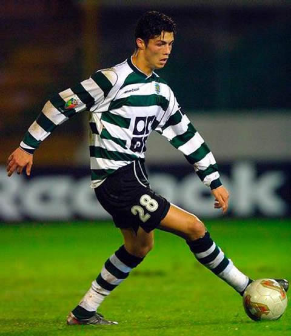

Early Age
At the age of eight, his father was an equipment manager at amateur team Andorinha. This is Cristiano first play club. In 1995, Ronaldo signed with local club Nacional. Even at that age, Ronaldo was already recognized as a phenomenon - a kid who ate, slept and drank the game. After the winning ot the title, Ronaldo went on a three-day trial with Sporting CP.
Cristiano Ronaldo signed with Sporting Portugal in 2001. He became the only player ever to play for Sporting's under-16, under-17, under-18, B-team, and the first team, all within one season. In the summer of 2003 Ronaldo amazes everybody with his skills with the ball in match against Manchester United. Ronaldo was offered to Barcelona for less than the €15 million Manchester United paid, but the Catalan club could not afford him at the time as the club had already spent its budget on other players.
